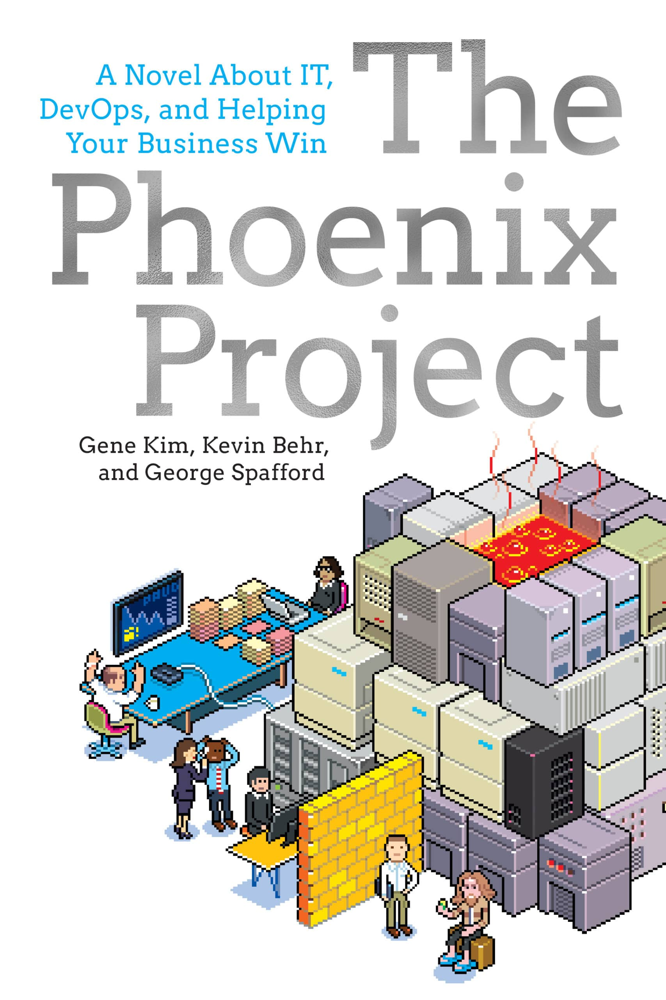

A story of bottlenecks, collaboration, and changing how technology work flows.Motorcycles
The rabbit hole
I spent roughly twelve years riding motorcycles. In the first five to seven, I went through several bikes, and one eventually accumulated thousands of dollars in cosmetic modifications.
What changed
Over time, I rode less. After moving to New Jersey, I eventually sold my final bike.
What stayed with me
I don't need to own a motorcycle to feel connected to riding. Years of experience are still there, and a conversation with another rider can bring them right back.